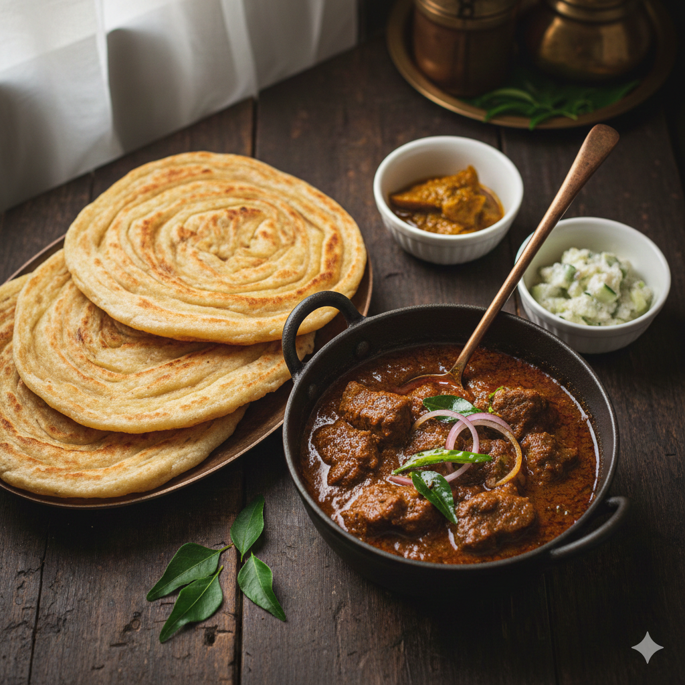

Home
Porotta & Beef Curry

Description
Porotta and Beef Curry is a popular South Indian dish, especially famous in Kerala cuisine.
Porotta is a flaky, layered flatbread made from refined flour, while beef curry is a rich and
spicy preparation cooked with aromatic spices, coconut slices, and slow-cooked beef.
Together, they form a classic comfort meal loved across the region.
Ingredients
- Beef (cut into medium pieces)
- Onions (thinly sliced)
- Ginger-Garlic Paste
- Green Chilies
- Curry Leaves
- Coconut Slices
- Coconut Oil
- Turmeric Powder
- Red Chili Powder
- Coriander Powder
- Black Pepper Powder
- Garam Masala
- Salt
- Water
- Porotta (for serving)
Steps
- Marinate the Beef: Clean the beef and marinate it with turmeric powder, chili powder,
pepper powder, salt, and ginger-garlic paste. Rest for at least 30 minutes.
- Pressure Cook: Add the marinated beef to a pressure cooker with water and cook until
tender. Set aside.
- Prepare the Masala: Heat coconut oil in a pan. Add coconut slices and fry until golden
brown. Remove and keep aside.
- Sauté Onions: In the same oil, add onions, green chilies, curry leaves, and sauté until
onions turn dark brown.
- Add Spices: Add coriander powder, chili powder, garam masala, and mix well on low heat.
- Combine Beef: Add cooked beef along with its stock. Mix well and simmer until the gravy
thickens.
- Final Touch: Add fried coconut slices and adjust salt. Cook for a few more minutes.
- Serve Hot: Serve the beef curry hot with soft, flaky porottas.